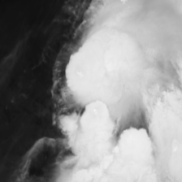
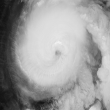
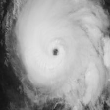
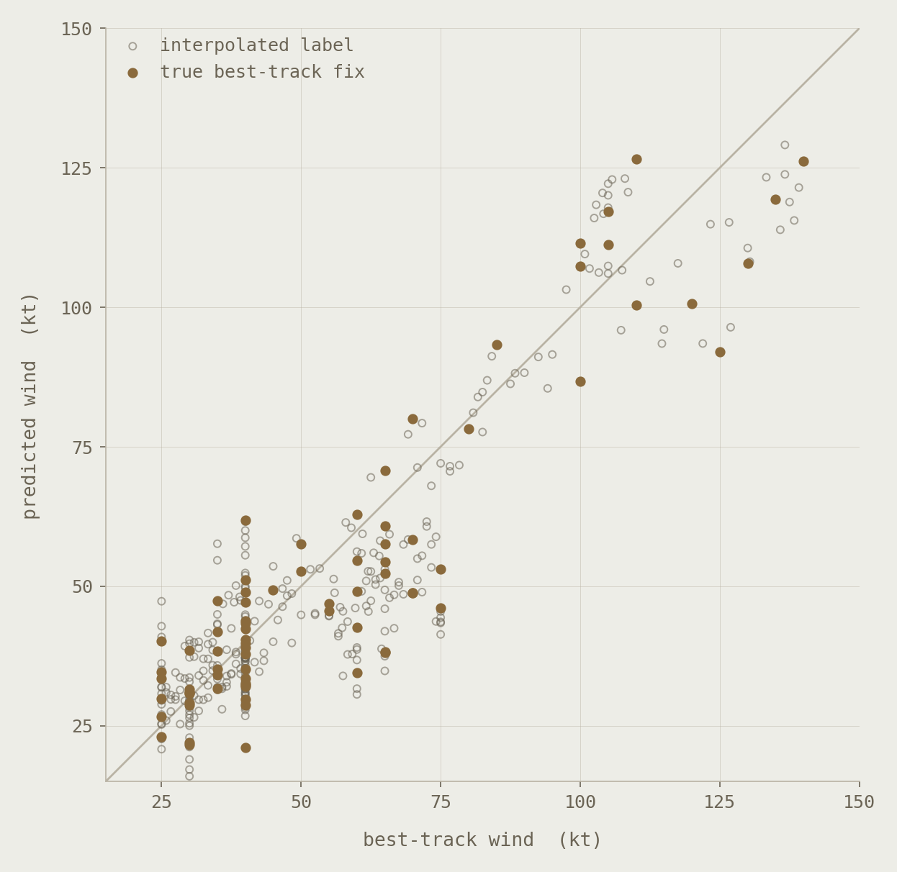

Trained on 2,092 storm-centered crops from 15 Atlantic storms between 2018 and 2024, labeled against the NOAA best track.



Hurricane Michael over roughly three days in October 2018, from a disorganized tropical storm to a category 5 at landfall. Every frame is centered on the best-track position and shown exactly as the network receives it, at 224 by 224 pixels. The middle label is interpolated between six-hourly fixes; the outer two are true fixes.
Three storms were held out entirely: Ian, Nicole and Claudette. The network never saw a frame of any of them during training.

Each point is one frame. The diagonal is perfect agreement. Best-track winds are recorded in five-knot steps, which is why the points stand in columns. Interpolated labels are drawn open; the 77 true best-track fixes are filled.
| Category | Frames | MAE | Bias |
|---|---|---|---|
| Depression | 83 | 5.50 | +2.38 |
| Storm | 187 | 7.59 | −2.74 |
| Category 1 | 58 | 15.76 | −14.58 |
| Category 2 | 9 | 3.96 | +0.24 |
| Category 3 | 25 | 10.50 | +7.68 |
| Category 4 | 15 | 19.49 | −19.49 |
| Category 5 | 4 | 18.25 | −18.25 |
Knots. Bias is the mean signed error, so a negative figure means the network guessed low.
The network is accurate on weak systems and underestimates strong ones. At category 4 it reads a storm roughly 19 knots too low, and at category 5 about 18. Those bands hold 15 and 4 frames respectively, against 270 below hurricane strength, so the most likely explanation is that the model rarely saw a major hurricane and hedges toward the middle of the distribution it did see.
Category 1 is a separate problem. Its error is nearly as large, and most of those frames belong to Ian on either side of its rapid intensification, where the storm changed faster than a six-hourly best track resolves.
Both are testable, and neither is fixed here on purpose. Adding major hurricanes to the training set after seeing this failure would make the 9.00 knot figure difficult to trust, so it stands as a baseline and the class-imbalance experiment comes next, measured against it.